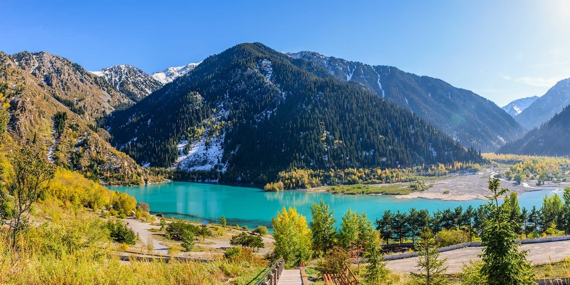
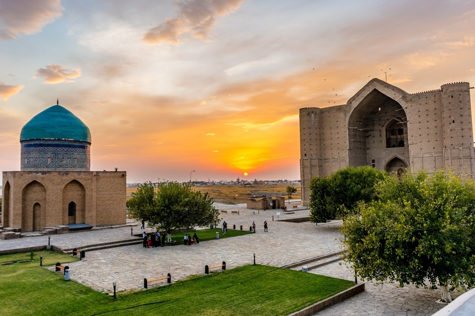

Bourgoulyuk.
It is no coincidence that we put this direction first in the ranking.
We think that there is not a single soul who has not visited this recreation area at least once in his life.
How to get there? Drive towards to Lenger. For those who are afraid to get lost - the signs “Ak Mosque” are placed along the entire route. Drive in the direction of these signs.
Only 50 km - and you are in a real paradise on Earth. Unless, of course, you perfectly understand the phrase from V. Vysotsky’s poem:
"Only mountains can be better than mountains.
" About "no one has been" better silent. Why - read below.
Sayram-Ugam National Park
Sayram-Ugam National Park, also Sairam-Ugam, is a mountainous region of the Western Tian Shan Mountains, on the border with Uzbekistan. Ugam-Chatkal National Park of Uzbekistan is across the border, and Aksu-Zhabagly Nature Reserve of Kazakhstan is directly to the northeast along the border.
Tourism
Though much of the area is protected for nature conservation, there are 10 tourist routes in the park. The routes support hiking, horseback, and on some lengths, buses. Hiking trails range from 7 to 72 km. Facilities include campsites, hiking trails, viewing platforms, baths and saunas, yurts to let (without services), a hotel, and access to guides and translators.[7]
Kaskasu.

Kaskasu gorge-not only thousands of Shymkent residents, but also many foreign tourists who come here from all over the world to enjoy the original nature, listen to the singing of rare birds and, of course, relax know about its picturesque, fascinating landscapes and unique landscapes! More than a thousand species of plants, several dozen species of mammals!
It is here, at an altitude of 1650 m above sea level, in the spurs of the Western Tien Shan, kaskasu is located
(southern region)
TURKISTAN – THE JEWEL OF KAZAKHSTAN

Turkistan is 165km northwest of Skymkent, 320km north of Tashkent and 850km west of Almaty.
It is possible to catch a train from Almaty to Turkestan, which is the option we took. This cost us about US$20 per person for a comfortable 6-person sleeper berth and took 20 hours, leaving Almaty at 22:00.
To leave Turkistan we took a minivan to Taraz, and then changed to another minivan to go to Bishkek. We don’t remember the cost for this sorry, but it was very reasonable.
There is also train access to the capital, Astana, and international connections to Tashkent, if you already have your Uzbekistan visa.
HOW TO GET TO TURKISTAN
Turkistan is 165km northwest of Skymkent, 320km north of Tashkent and 850km west of Almaty.
It is possible to catch a train from Almaty to Turkestan, which is the option we took. This cost us about US$20 per person for a comfortable 6-person sleeper berth and took 20 hours, leaving Almaty at 22:00.
To leave Turkistan we took a minivan to Taraz, and then changed to another minivan to go to Bishkek. We don’t remember the cost for this sorry, but it was very reasonable.
There is also train access to the capital, Astana, and international connections to Tashkent, if you already have your Uzbekistan visa.